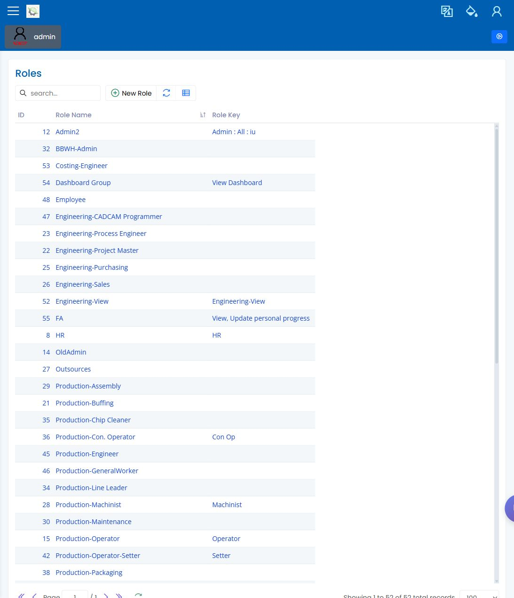

Users and Roles
Path: Administration / User Management and Administration / Roles URL: <APP_BASE_URL>/Administration/User, <APP_BASE_URL>/Administration/Role
What This Page Is For
Use Users and Roles to review who can sign in and which visible menu actions a role can use. This chapter covers the visible administration workflow only.
User-worker relationship, permission-label meaning, and language setup remain tracked in the Evidence and Decisions Register until the administrator or implementation owner confirms them.
What You See
- A user-management list for reviewing accounts, names, status, and related login information.
- A roles page for reviewing role names and visible permission labels.
- Search, refresh, export, and column controls where available.
- Detail forms or dialogs for reviewing the selected user or role.
What You Do
- Open User Management to confirm the expected user exists and is active.
- Open Roles to confirm the role name used for the site workflow.
- Review visible permission labels only when explaining why a menu item or action appears.
- Avoid changing access during the workflow unless the administrator explicitly approves it.
What To Check
- The user is active.
- The assigned role matches the intended reviewer scenario.
- The visible sidebar and buttons are consistent with the role.
- Any missing page is treated as an access or scope question before changing data.
Common Issues
| Issue | What it means |
|---|---|
| User cannot see a menu item | The assigned role may not include that visible page or action. |
| User is inactive | The account may need administrator review. |
| Permission label is unclear | Confirm with the administrator before changing role setup. |
Related Pages
Screenshot
